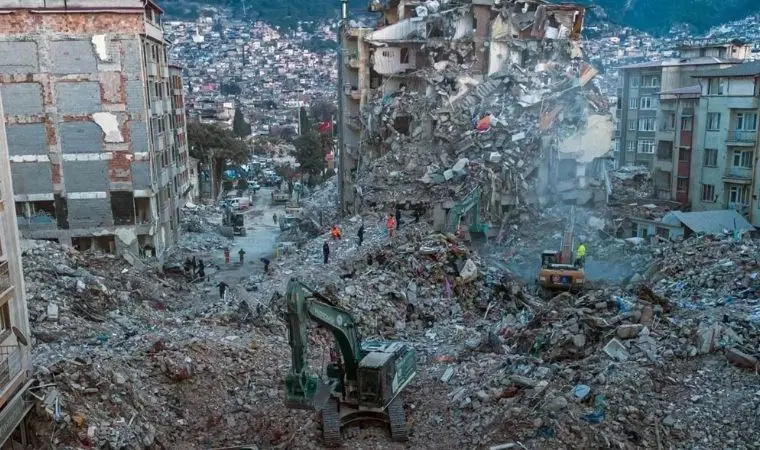
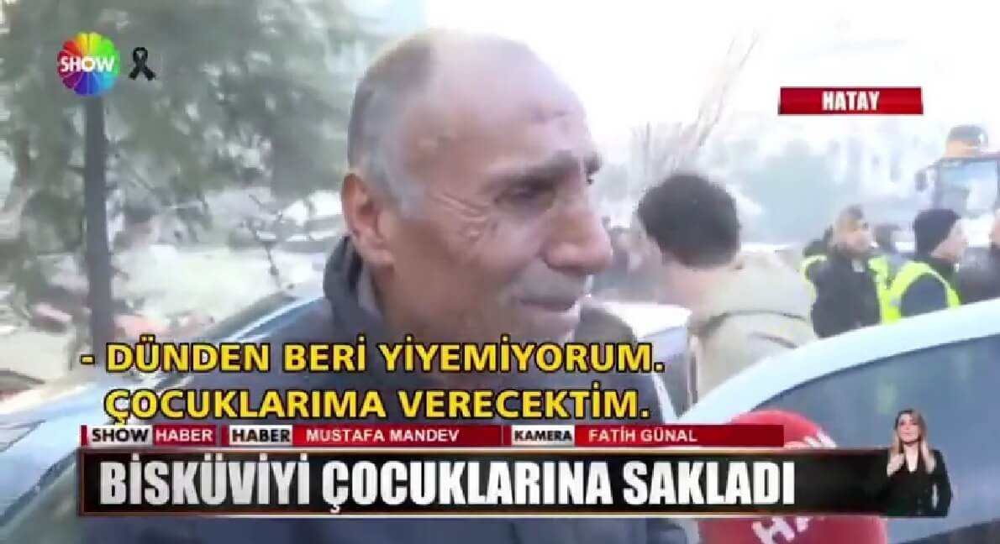

6 Şubat 2023 Kahramanmaraş Depremleri
6 Şubat 2023 sabahı saat 04:17’de Kahramanmaraş merkezli 7,7 büyüklüğünde deprem meydana geldi. Aynı gün öğle saatlerinde Elbistan merkezli 7,6 büyüklüğünde ikinci bir deprem yaşandı.
Depremler Kahramanmaraş, Hatay, Adıyaman, Gaziantep, Malatya ve çevresindeki illerde büyük yıkıma sebep oldu. On binlerce bina çöktü veya ağır hasar aldı, milyonlarca insan güvenli bölgelere taşındı.
Arama-kurtarma çalışmaları haftalarca sürdü. Türkiye’nin farklı şehirlerinden ve dünya ülkelerinden yardım ekipleri olay yerine ulaştı. Kayıp arama çalışmaları ve enkaz kaldırma süreci büyük bir organizasyon gerektirdi.
Depremin ekonomik etkisi çok büyüktü. Binalar, yollar, köprüler ve altyapı ciddi şekilde zarar gördü. Milyarlarca lira değerinde maddi kayıp oluştu. Ayrıca eğitim ve sağlık hizmetleri de ciddi şekilde aksadı.
Bisküvi Olayı: Bir Baba ve Çocuklarının Hikâyesi
Hatay'da enkaz başında cebinde bisküviyle bekleyen Şerif Ölmez’in görüntüleri büyük yankı uyandırdı. Oğlu Oktay depremde hayatını kaybetmişti. Şerif Ölmez, çocuklarına vereceği son yiyecek olarak cebinde bisküvi taşıyordu.
Deprem sonrası ailesini kaybeden Şerif Ölmez, büyük acı yaşadı. Eşi Halime, 16 yaşındaki kızı Cansu, 14 yaşındaki oğlu Savaş ve 3 yaşındaki oğlu Oktay’ı kaybetti. Depremden iki ay sonra akciğer kanseri teşhisi kondu ve 19 Aralık 2023’te vefat etti. Vasiyeti üzerine, oğlunun ve eşinin yanına defnedildi.
Bu olay, bir babanın evlatlarına olan sevgisini ve toplumun afet anlarında dayanışma ruhunu simgeleyen dokunaklı bir hikâye olarak hafızalarda kaldı. İnsanların birbirine yardım etmesinin önemini ve afet anlarında insanlığın güzelliklerini gözler önüne serdi.
